おまけ
|
このゲームの魅力は、これだけじゃない！ 「ポケットプリンタ」を使えば、オリジナルシールが１００種類以上も作れます。また、隠れたゲームモードもいくつかあるみたい。 ここでは、そんな画面を紹介しちゃいます。 |
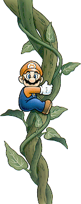 | |
| …… | ||
| 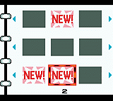 | ゲーム中に、いろいろなことをすると、アルバムの絵が増えていくみたい。 | |
| …… | ||
| 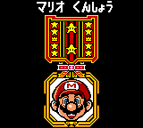 | マリオ勲章だ！どうやったらもらえるんだろう？ | |
| …… | ||
| 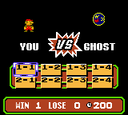 | あれ？この黒いのはテレサ？！ ＶＳゲームを一人で楽しめるゲームもあります。 | |
| …… | ||
| 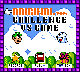 | 全部そろったゲームモード画面を大公開！ | |
| …… | ||
| 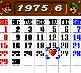 | いつまでも使えるカレンダーに、僕の大事な記念日をマーク！ | |
| …… | ||
| 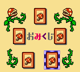 | 今日の運勢を、マリオキャラクターに占ってもらおう！ | |
| …… | ||
| 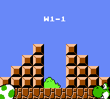 | ヨッシーのたまごが、どこにあるか？ヒントを見ることができます。 | |
| …… | ||
| 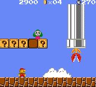 |
あれ？こんな逆さにでてくるパックンフラワーだ？ こんなキャラクター、マリオ１にいたかな？ |
|
| …… | ||
| 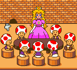 | ピーチ姫と、キノピオ集合。みんなに会えるかな？ | |
| …… | ||
| 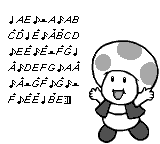 | 楽譜を打ち込むと、STARTボタンで演奏できます。 | |
| …… | ||
| 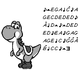 | これは何の曲だろう？ | |
| …… | ||
| 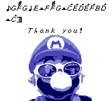 | ゲームボーイカラーのスイッチを入れると、こんな画面がだせるようになるよ。 | |
オリジナル｜チャレンジ｜VSゲーム｜おまけ
|
|